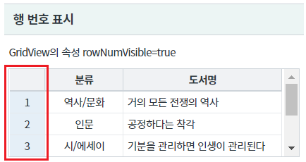
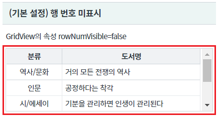
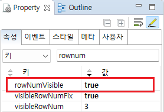
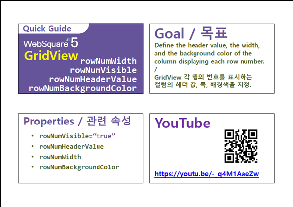

GridView의 행 번호를 표시하는 예제입니다. 이 기능은 속성 rowNumVisible을 true로 설정하여 사용할 수 있습니다.
GridView에 할당된 데이터를 기반으로 행 번호가 출력됩니다.
행 번호는 1부터 시작되며 시작 번호 변경은 GridView의 함수 setStartRowNumber를 사용하여 설정할 수 있습니다.
행 번호 표시
행 번호 미표시(기본 설정)
영역 [행 번호 표시]의 GridView를 확인합니다.
첫 번째 컬럼에 행 번호가 표시됩니다.
[브라우저(Chrome) 실행 예시 - 행 번호 표시]

영역 [(기본 설정) 행 번호 미표시]의 GridView를 확인합니다.
행 번호가 표시되지 않습니다.
[브라우저(Chrome) 실행 예시 - 행 번호 미표시]

STEP1. GridView의 속성을 정의합니다.
[필수] rowNumVisible="true" //[default:false, true] 행 번호 표시 여부
그림 1.웹스퀘어5 SP5 스튜디오의 Property View(속성창) 예시

[소스 코드 예시]
<!-- gridView 의 소스 본문 예시 --> <w2:gridView rowNumVisible="true" dataList="data:dlt_books_1" style="height: 100px;"> <!-- 중략 --> </w2:gridView>
rowNumVisible
setStartRowNumber( rowIndex )
[웹스퀘어5 SP5 개발 가이드] GridView
링크 : https://docs1.inswave.com/sp5_user_guide/bc10c1b82c9a2a0b#e1c4658baf7e726f
[웹스퀘어5 SP5 개발 가이드] GridView 행 번호 표시 컬럼의 헤더 값, 폭, 배경색 지정
링크 : https://docs1.inswave.com/sp5_user_guide/86bdcf48029b958b#a5bc77b853651f01
GridView 행 번호 표시 컬럼의 헤더 값, 폭, 배경색 지정
링크 : https://youtu.be/-_q4M1AaeZw
